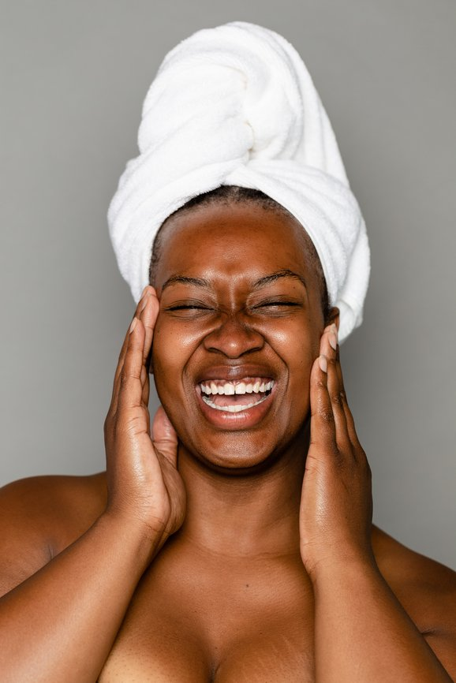

UNMASK YOUR TRUE SELF: HOW FACIAL TREATMENTS BOOST CONFIDENCE

Hadiyah Daché, licensed cosmetologist & esthetician
Health & Wellness
6 min
← All articlesThe Book →Friendly reminder: this post contains affiliate links, which help support the Glowdega Archive. If you buy through them, I may earn a commission at no extra cost to you.
As Mental Health Day approaches, it's time to peel back the layers and reveal the radiant, confident you that's been hiding underneath. At Glowdega, we believe that true beauty isn't just skin deep—it's a reflection of your inner well-being. Let's explore how the simple act of caring for your skin can be a powerful tool in your mental health toolkit.
The Skin-Mind Connection: More Than Just Surface Level
Your skin is more than just a protective barrier; it's a mirror reflecting your internal state. Ever noticed how stress can trigger a breakout, or how a good night's sleep can give you that coveted "glow"? This isn't just anecdotal—it's a testament to the intricate connection between your skin and your mental well-being.
When you're stressed, your body produces cortisol, often called the "stress hormone." This can lead to increased oil production, potentially causing acne flare-ups. On the flip side, when you're relaxed and happy, your body is better able to repair and rejuvenate, leading to clearer, more radiant skin.
But the relationship goes both ways. Taking care of your skin can also have a positive impact on your mental state. The act of nurturing your skin through a thoughtful skincare routine or professional facial treatment can be incredibly soothing and meditative. It's a moment of pause in your busy day, a time to reconnect with yourself and show yourself some love.
Facial Treatments: Self-Care in Its Purest Form
In our fast-paced world, it's easy to forget the importance of slowing down and taking care of ourselves. This is where facial treatments come in—they're not just about achieving glowing skin; they're about dedicating time to nurture your whole self.
When you book a facial treatment, you're not just investing in your skin—you're investing in your mental well-being. Here's how:
1. Stress Relief: The gentle touch of a skilled esthetician, combined with soothing scents and calming music, can significantly reduce stress levels.
2. Mindfulness Practice: A facial treatment provides an opportunity to be present in the moment, focusing on the sensations and letting go of worries.
3. Boost in Self-Esteem: As your skin improves, so does your confidence. Feeling good about your appearance can have a positive ripple effect on your overall mood and outlook.
4. Human Connection: In our increasingly digital world, the power of human touch shouldn't be underestimated. The care and attention you receive during a facial can fulfill our innate need for connection.
5. Time for Reflection: While you're relaxing during your treatment, you have the opportunity to reflect, set intentions, or simply let your mind wander—all beneficial for mental clarity.
At Glowdega, we understand the powerful interplay between skin health and mental well-being. That's why we've developed our signature treatments, GLOW and GLORY, designed not just to enhance your skin, but to uplift your spirit.
The Glowdega GLOW
Our GLOW facial treatment is more than just a facial—it's a holistic experience designed to rejuvenate your skin while calming your mind. It’s a true journey of relaxation and renewal.
GLOW is the perfect fusion of clinical efficacy and spa-like tranquility. Each treatment is meticulously tailored to your skin's unique needs, ensuring that every minute of the full hour is dedicated to your personal care and relaxation. This customized approach not only optimizes skin health but also provides a sense of being truly seen and cared for—a powerful boost to mental well-being.
Throughout your GLOW experience, our skilled estheticians don't just treat your skin—they create a serene environment that encourages mental relaxation. The unhurried pace of the treatment allows you to step away from the frenetic energy of daily life, providing a full hour of focused self-care that benefits both body and mind.
Many clients report that beyond the visible improvements in their skin, they leave their GLOW treatment feeling mentally refreshed and emotionally balanced. The combination of physical pampering and the opportunity for mindfulness creates a powerful antidote to stress and anxiety.
GLOW is more than affordable luxury—it's an investment in your overall well-being. It's a reminder that taking time for yourself isn't indulgent; it's essential. In a world that often prioritizes constant productivity, GLOW offers a sanctuary where you can reconnect with yourself, nurture your skin, and cultivate inner peace.
Giving You The GLORY
For those looking to take their self-care to the next level, our GLORY treatment is the answer. This luxurious experience is not just a facial—it's a comprehensive journey that nurtures your skin, calms your mind, and rejuvenates your spirit.
What sets GLORY apart is its combination of one advanced modality and one intensive technique, creating a synergistic effect that elevates both your skin health and mental state. The GLORY treatment is designed to maximize your "skinvestment" by delivering results equivalent to multiple standard facials in a single session. But the benefits go far beyond skin deep. This 90-minute odyssey provides an extended period of focused self-care, allowing you to step away from the demands of daily life and invest in your overall well-being.
Many clients report that the GLORY experience leaves them feeling not just physically renewed, but mentally refreshed and emotionally balanced. The combination of expert touch, advanced skincare, and dedicated time for self-care creates a powerful antidote to stress, anxiety, and the mental fatigue of modern life.
Moreover, the visible improvements in your skin that GLORY delivers can have a profound impact on your self-esteem and confidence. When you look in the mirror and see a radiant, healthy complexion, it can boost your mood and outlook, creating a positive feedback loop between your outer appearance and inner well-being.
Embarking on the road to GLORY is more than just a skincare decision—it's a commitment to your holistic health. It's recognition that true beauty emanates from a place of inner calm and self-care. By choosing GLORY, you're not just investing in your skin; you're investing in a more confident, centered, and radiant version of yourself.
Incorporating Skincare into Your Mental Health Routine
While professional treatments can work wonders, daily skincare practices can also play a crucial role in maintaining both skin health and mental well-being. Here are some tips to help you create a skincare routine that nourishes both your skin and your mind:
1. Make it a Ritual: Instead of rushing through your skincare routine, treat it as a daily ritual. Set aside dedicated time morning and evening to really focus on each step. Create a playlist to help set your ritual or use our cleansing cones to add aromatherapy to your routine ritual.
2. Practice Mindfulness: As you apply each product, pay attention to the scents, textures, and sensations. This mindfulness practice can help ground you in the present moment.
3. Use Positive Affirmations: While looking in the mirror during your skincare routine, practice saying kind things to yourself. This can help combat negative self-talk and boost your confidence.
4. Incorporate Facial Massage: Gently massaging your face as you apply your products can help relieve tension and promote relaxation.
5. Choose Products You Love: Select skincare products with scents and textures that bring you joy. The simple act of using a product you love can boost your mood.
Remember, caring for your skin is an act of self-love. It's not about achieving perfection, but about nurturing yourself, inside and out.
As Mental Health Day approaches, we invite you to unmask your true self at Glowdega. Whether you choose our GLOW treatment for a pick-me-up, or indulge in the comprehensive GLORY experience, you're not just investing in your skin—you're investing in your overall well-being.
In a world that often feels chaotic and demanding, taking the time to care for yourself isn't just a luxury—it's a necessity. So why not start with your skin? After all, when you feel good in your skin, you're better equipped to face whatever life throws your way.
Book your appointment at Glowdega today, and take the first step towards unmasking the confident, radiant you that's been waiting to shine through. Because you deserve to glow, inside and out.